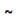
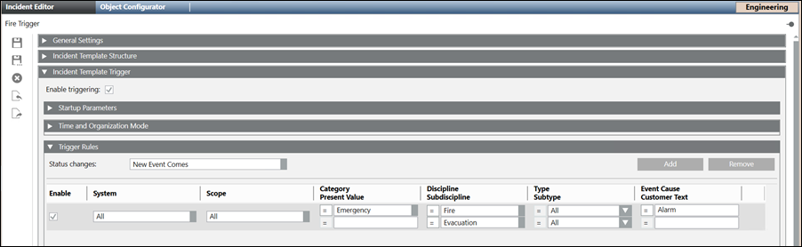
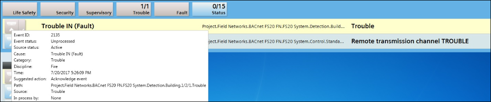
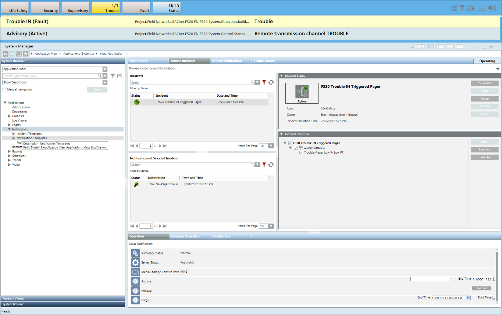
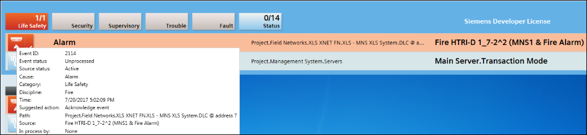
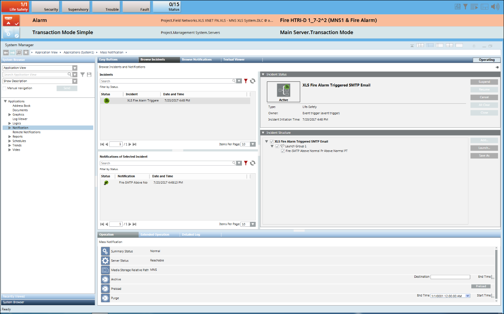

Incident Trigger Rules
This section describes procedures for configuring incident trigger rules.
Create an Incident Trigger Rule
- Select Applications > Notification > Incident Templates > [incident template].
- Open the Incident Template Trigger expander.
- Select the Enable triggering check box.
- Specify the parameters in the Startup Parameters expander.
- Open the Time and Organization Mode expander and specify the time parameters for triggering the Incident template.
- Configure the trigger rule by specifying the values in the Trigger Rules expander.
NOTE: The incident template is not saved if the Enable check box is selected and the active trigger rules are set to the default values for Scope, Category, Discipline or Subdiscipline.
If the Enable check box is selected and the filter rule is set to [All] for Scope, Category, Discipline or Subdiscipline and you try to save the incident trigger then a warning message displays indicating an incident template trigger is configured to match all events. - (Available only for Reno Plus license users) Specify the values in the Message Optimization Parameters expander.
- The incident trigger rule is created and configured.
Update or Delete an Incident Trigger Rule
- One or more incident templates are configured.
- Select Applications > Notification > Incident Templates.
- Select the configured incident template.
- Open the Incident Template Trigger expander.
- Select the incident trigger rule to be updated or deleted. Do one of the following:
- Update the incident trigger rule by changing the required fields.
NOTE: For more information, see Create an Incident Trigger Rule. - Click Remove to delete the selected trigger rule. Click Yes to confirm.
- Click Save
 .
.
- The incident trigger rule is updated or deleted.
Initiate an Incident when an Event is Generated from a BACnet or Xnet Interface
Scenario: You want to automatically initiate an incident (for example, Incident_BACnet or Incident_Xnet) when an event is generated from either the BACnet or Xnet interface.
- An event is configured from the BACnet or Xnet interface.
- Select Applications > Notification > Incident Templates.
- Click Create .
- The Create New Object dialog box displays.
- Select Incident Template from the Child Type drop-down list.
- Enter a name in the Name field (for example, Incident_BACnet or Incident_Xnet) and thereafter click OK.
- The Incident Editor tab displays.
- Open the Incident Template Trigger expander.
- Select the Enable Triggering check box and thereafter open the Trigger Rules expander.
- Click Add to add a new row.
- Select the Enable check box and configure the parameters. For information, see Incident Template Trigger Expander.
NOTE: Enter the text representing the cause of the event in the Event Cause field and select the Like operator
from the drop-down list. 
- Click Save .
- When an event from the BACnet or Xnet interface is generated, the incident you created in step 4 (Incident_BACnet or Incident_Xnet) is initiated and can be verified from the Browse Incidents tab by selecting Applications > Notification > Browse Incidents.
NOTE: It is mandatory to enable trigger at project level to automatically initiate an incident. For more information, refer to Enable or Disable Triggers for Notification in the Enable Incident Triggering section .



